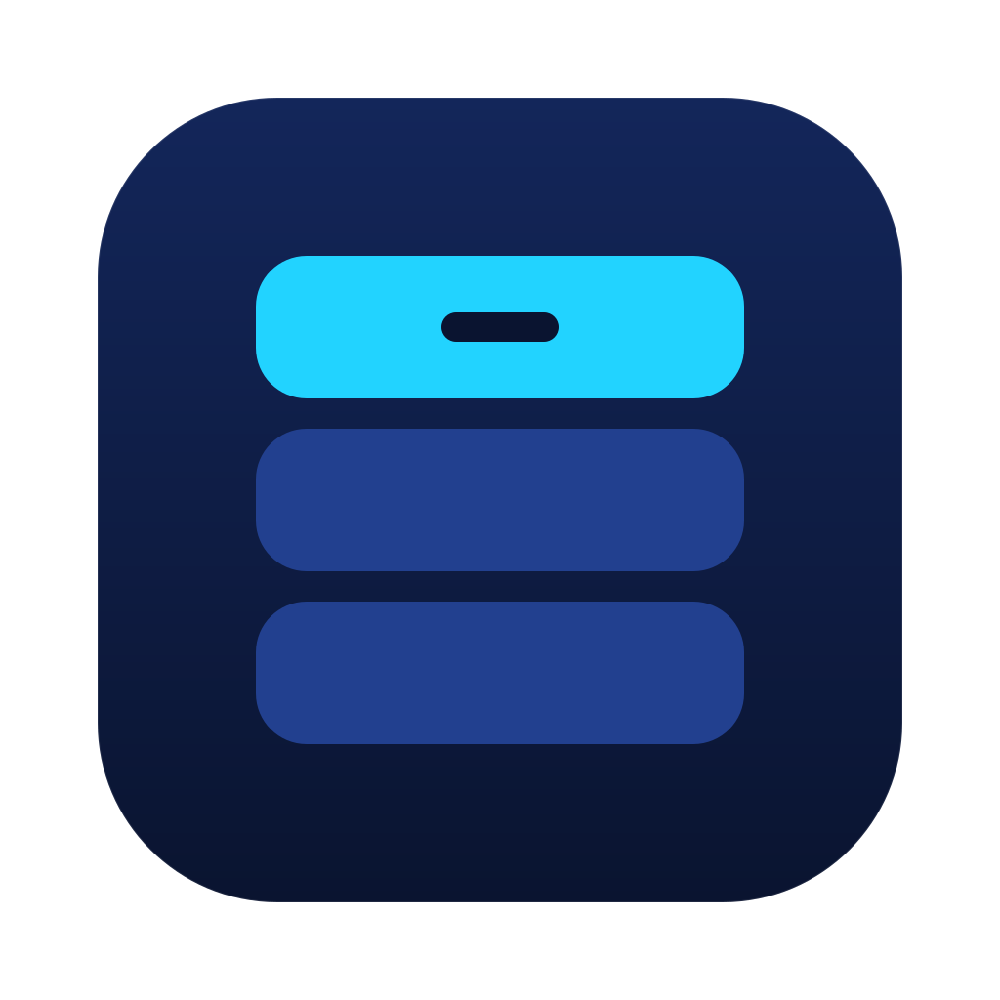
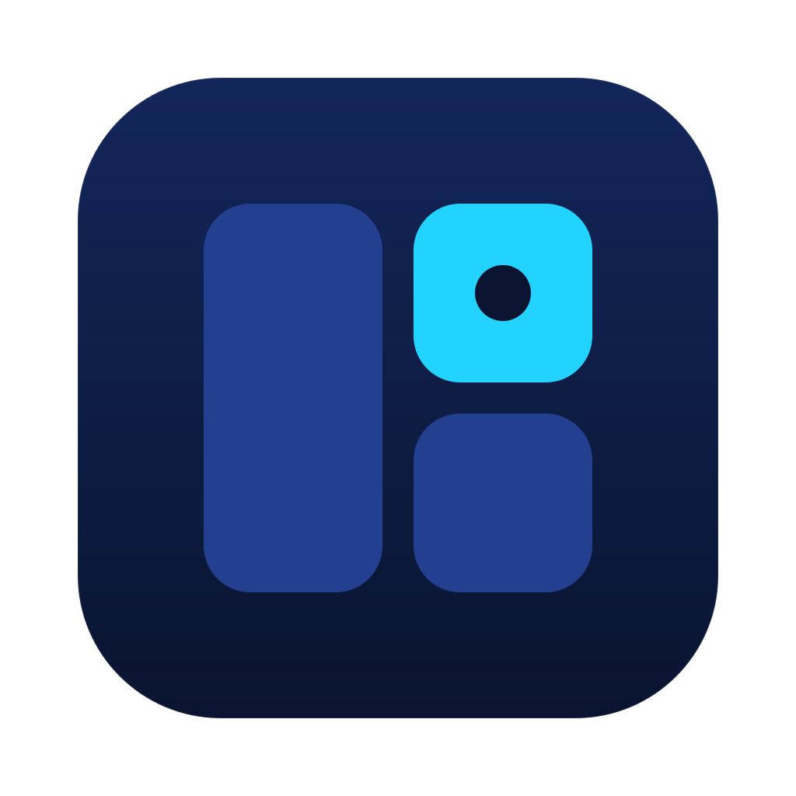
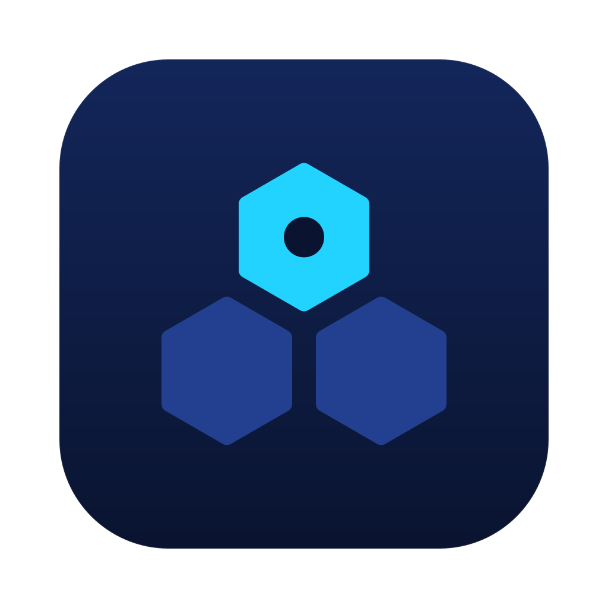
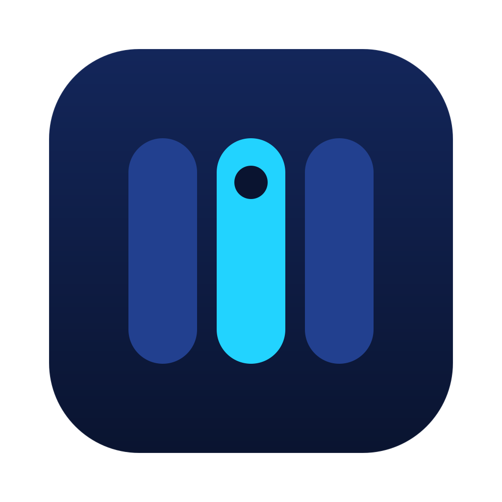

Parecido al logo de Windows.

1 · Cajones
Tres compartimentos horizontales; el activo, con tirador.

2 · Bento
Uno alto y dos apilados: asimétrico, nada de Windows.

3 · Panal
Tres celdas hexagonales: separadas y juntas a la vez.

4 · Silos
Tres columnas iguales, como silos; la activa en cian.